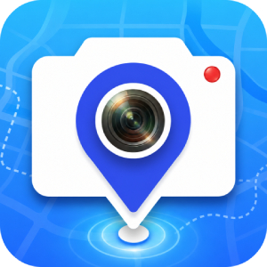
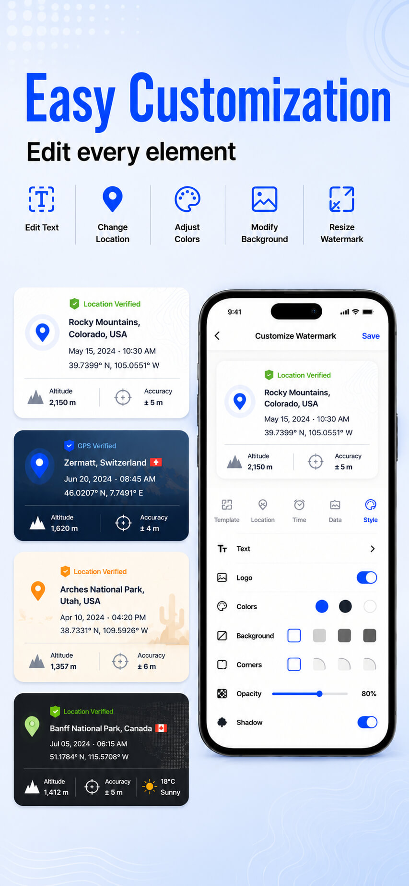
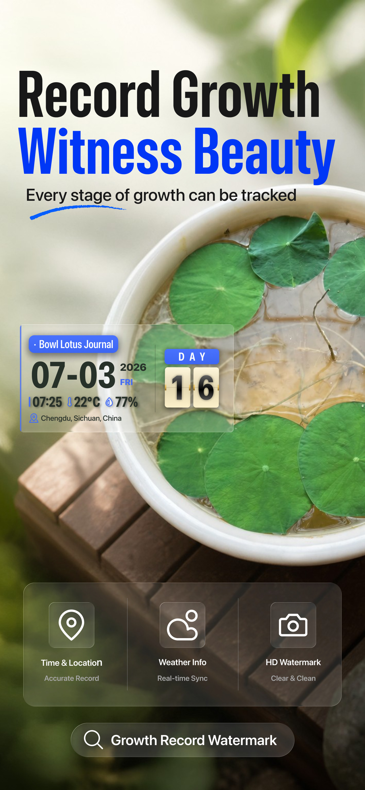

天天水印相机
天天水印相机是一款免费的照片与视频水印相机，可在拍摄时实时添加日期、时间、GPS 位置、地图、地址、温度和气压。

拍摄照片和视频时可以添加哪些水印信息？
天天水印相机可在拍摄时将选定信息叠加到照片或视频中，用于工作记录、现场巡检、配送记录和户外拍摄。
- 地图：在水印中嵌入地图，支持标准、卫星、混合三种地图类型；iOS 基础模板还可调整地图缩放。
- 简短地址：显示精简的位置名称。
- 完整地址：需要更详细的位置记录时，可显示完整地址。
- 纬度与经度：显示 GPS 坐标，支持十进制格式。
- 日期和时间：自定义显示格式，可选择包含星期或秒的格式。
- 时区：显示时区，例如 GMT 偏移。
- 海拔：以米为单位显示海拔高度。
- 定位精度：以米为单位显示定位精度数值。
- 指南针方位：在水印中显示方位角及方向标记。
- 温度：在水印中显示温度读数。
- 气压：显示以 hPa 为单位的大气压力读数。
可用字段因模板和平台而异。iOS 植物模板另支持湿度，巡检模板支持天气字段；基础模板中的温度和气压是具体读数，不代表天气预报。
水印可以怎样自定义？
- 按需开启或关闭支持的水印元素，选择简洁记录或显示更多现场信息。
- 选择 Emoji 或符号，调整支持的标签显示方式。
- 调整支持元素的字体、字体大小和颜色。
- 保存自定义地点标签，重复使用常用地址。
- 在支持的工作模板中编辑标签文字，并选择要显示的记录字段。
- iOS 支持在适用水印中添加自定义 Logo 或图片。
不同平台的水印模板
六种水印模板适用于工作打卡、现场巡检、日常拍摄和植物记录；名称及可用元素因平台而异。
Android
- Default：可按需选择日期时间、地址、GPS 坐标、海拔、定位精度、方位角、温度、气压和地图等元素。
- Accent：简洁版式，可编辑标签，选择日期时间、时区和地址，并开关强调线。
- Work Record：工作记录版式，可编辑标签，并选择显示坐标、日期时间、时区、地点图标和 Verified 标记。
- Verified Stamp：印章式版式，可显示地址、日期时间和时区，并开关地点图标及 Verified 标记。
- Plant Growth Tracking：设置 Day 1，以带日期和生长天数的照片记录植物生长过程。
- Inspection Record：用于巡检记录，可显示人员、备注及晴、多云等天气状况。
iOS
- 经典地图
- 现场巡检
- 醒目打卡
- GPS 认证
- 系统认证
- 植物生长日记
通过双列列表和高清实景预览，直观挑选适合当前场景的水印。模板名称支持英语、简体中文、印度尼西亚语、菲律宾语和越南语展示。横屏录制时，成片水印的间距与位置和取景框保持一致。
iOS 植物记录支持设置 Day 1、显示生长天数，并添加备注、日期、时间、温度、湿度和地点；巡检记录可设置项目、场景、人员、备注、日期时间、天气和地址，以及支持的文字、颜色和显示字段。
所有水印模板免费使用，切换模板无需先观看广告；App 仍会展示广告。
怎样在 iOS 上制作照片报告？
照片报告可将多张图片整理成一张可分享的长图，适合现场巡检、物业检查等需要汇总多张照片的记录。
- 打开报告入口。先使用 App 拍摄至少一张照片，拍摄按钮旁就会显示报告入口。
- 选择图片。选择 1–42 张 App 拍摄的水印照片或相册图片。原有水印会保留；导入图片不会添加水印。图片固定为每行 3 张，报告长图会随图片数量增加而变长。
- 填写报告信息。设置 Logo、公司/项目、场景名称、报告人、日期和天气字段，按需调整公司/项目、场景名称和分隔线颜色；也可添加包含 App 名称和可扫描二维码的页脚。
- 完成并分享。按需新增或删除图片，完成后将整份报告作为一张图片分享。
报告在设备本地生成，功能免费。报告不会保存在 App 内，每次进入均开始一份新报告；不支持拖动排序和裁剪图片，需要更换图片时先删除原图再添加。
拍摄设置与照片保存
- 支持照片和视频拍摄，拍摄时可实时预览水印。
- 支持前后摄像头，以及横版、竖版拍摄。
- 支持自动闪光灯，提供水平线和纵轴线辅助构图。
- 当前已确认的相机焦距为 1 倍；地图缩放调整的是地图显示，不是相机变焦。
- 照片保存在本地设备。
- iOS 拍摄的照片和视频会保存到以 App 名称命名的相册；可在 App 内查看器中浏览已拍摄的媒体、查看详情并删除不需要的内容。
工作打卡、巡检与植物记录可以怎样用？
工程进度、外勤记录与拍照打卡
选择适用的工作模板，显示日期时间、地点和工作标签，在到场、离场或工作开始、结束时拍照留档。时间记录可供你自行相减计算工时；App 不会自动计算考勤或汇总工时。
物业巡检、设备维护与配送记录
在每个点位或任务完成后，拍下带地址、GPS 坐标、时间和相关巡检备注的照片。iOS 可将选定照片汇总为报告长图，添加项目名称和报告人后分享。
植物生长记录
iOS 使用植物模板设置 Day 1、填写备注，并在不同日期持续拍照；水印可显示生长天数、日期时间、温度、湿度和地点。
旅行与户外拍摄
将日期、地点、地图、海拔和方位信息显示在照片或视频中，保存和分享时也能直接看到拍摄背景信息。
看看水印拍摄效果




常见问题
天天水印相机免费吗？
免费使用，无订阅、无应用内购买；App 通过广告支持运营。
支持视频水印吗？
支持。照片和视频都可以在拍摄时实时添加水印。
可以用于工作现场记录吗？
可以。时间、地点、经纬度、地址和地图水印可用于工程、巡检、配送与现场服务记录。
可以导入已有照片，再添加时间或 GPS 水印吗？
不可以。水印在 App 拍摄照片或录制视频时添加。相册图片可以导入制作照片报告，但导入操作不会新增或替换原有水印。
可以自动计算工时吗？
不可以。可以在工作开始和结束时拍照打卡，之后自行根据时间相减计算工时；App 不会自动汇总工时，也不提供薪资或员工排班功能。
拍摄时间可以修改吗？所有信息都防篡改吗？
App 内的拍摄时间不可修改，但这不等于所有字段或整张照片都防篡改。设备的系统位置被特殊手段修改或伪造时，位置显示可能受到影响。
哪些功能需要联网？
地图和地址查询需要网络连接。如果相关信息没有加载，请检查网络连接和定位权限。